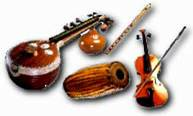

Vincent Mavely argues persuasively that children should be encouraged to learn to play musical instruments for fun and as part of their all-round development.

"After all, to achieve something in life, everyone has to work hard. We know of athletes and dancers who spend several hours a day, aiming for perfection. Learning a musical instrument is no different. Hard work and hours of practice will, in the end, not only achieve excellent results but also a lot of pleasure and satisfaction."
Indians have music as second nature, we all will agree. We all like listening, to the latest hit songs and invest some money in the latest Hi -Fi or CD system. That is our tradition. Have not our kings and Maharajas employed residents artists and musicians to entertain not only the members of their household, but also the public even at considerable expenses and detriment to other economic projects?
The very objective of starting “KALA” was to encourage the hidden artistic talents in members and their children. In this respect, we have to learn a lot from our Tamil friends, who are very eager and insist that at least one child in their family should learn a musical instrument. It is a sad fact even after the second generation in the western world that we Malayalees do not have many youngsters who have mastered any musical instrument. The reasons of course are various.
Many children, while at school, start to learn piano, flute or guitar. Is this because they have the talent or just because their friends at school have these classes and they want to join them? It is all right if they carry on and achieve something. But very often they lose their interest after a while and abandon the lessons. All efforts and money spent in vain!
We parents therefore should be able to detect any talent in our children and encourage them to persist in learning a skill. We must point out to them that, in this country to succeed in any field, half-skill is not sufficient. Unless you are a genius, you have to be hard working and extremely clever to be able to compete with others. This is the same as taking any A level exam. Again, it is a good idea. to make children interested in a rare music instrument than letting them start piano or guitar. While watching concerts on TV, ask them among the hundreds of instruments, which one would they like to learn? For a change a special instrument say cello, trumpet or saxophone, mastering which would have a better opportunity to join a group and get involved in music. Paying for these lessons would be good investment and money well spent.
Lastly, bear in mind that children change their taste and views very quickly and easily influenced by the media. A child who had shown interest in Piano at an early stage may like Guitar after some time. So, the decision taken to learn a particular instrument at an early stage has to be. maintained in order to achieve the result. Abandoning a skill at half way through is surely an unwise decision. After all to achieve something in life, everyone has to work hard. We know of athletes, musicians and dancers who spend several hours a day, aiming for perfection. Learning a musical instrument is not different. You can expect hard work and needs hours of practice which will in the end not only achieve excellent results but also lot of pleasure and satisfaction. It is the same as getting a degree in medicine or accountancy. So if thinking of learning an instrument, make a proper decision: only hard work, patience and perseverance will get you there!